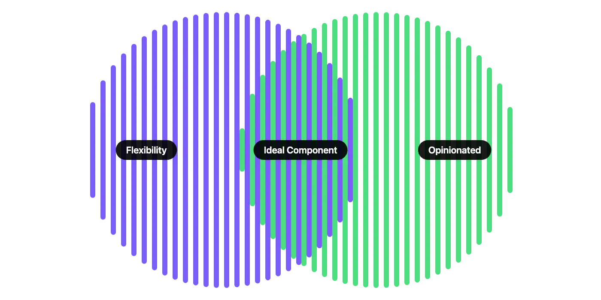

Fragmented components across six product sets were slowing engineering. I built a design system directly in Blazor — production-ready code, not a hand-off artefact — then scaled it with a team of ten developers.

Fragmented components across six product sets were slowing engineering and creating inconsistent UX. I identified this as the highest-leverage structural problem and proposed building a design system directly in Blazor — not a hand-off artefact, but production-ready code aligned with Next's existing stack. Working solo in VS Code with GitHub Copilot, that meant components could be adopted directly by dev teams without any translation overhead.
Building it with Copilot was a deliberate bet on AI-assisted development. It let me move faster than would have been realistic on my own, and gave me a much deeper understanding of how components behave in code. Handover to engineering teams was significantly smoother as a result.

Six product teams, one shared design system
Once the foundation was in place, I scaled adoption by forming a dedicated design system team of 10 developers drawn from across the six product sets. Existing relationships made it work. We had internal champions in each area, shared ownership, and a system shaped by the people implementing it rather than imposed on them.
I also built a component playground. A tool that let non-technical stakeholders like Product Owners mock up ideas using real components, without needing Figma or engineering support. It reduced back-and-forth in early ideation and got design thinking into the room earlier.
Beyond my own practice, I actively pushed AI adoption across the team. I ran presentations on integrating AI into design workflows: practical usage, where the tools genuinely add value, and how to think critically about their outputs.
AI literacy is becoming a core design skill. Getting the team comfortable early and helping them build good instincts felt like one of the more valuable things I could do.
The design system gave six product sets a shared language for the first time. The component playground extended that to non-technical stakeholders, and a team of ten developers now owns and scales it across the business.
Building the design system solo before handing it to a team of ten is probably the thing that best captures how I approach problems: start scrappy, validate fast, then build the structure that makes it last.